扉页
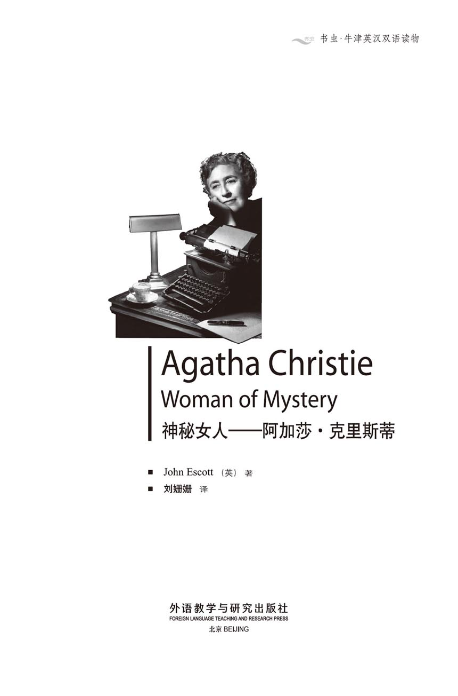
版权页
京权图字：01-2002-6587
Originally published by Oxford University Press, Great Clarendon Street, Oxford. © 2000
This edition is licensed for sale in the People's Republic of China only and not for export therefrom.
'Oxford' is a registered trademark of Oxford University Press.
只限中华人民共和国境内销售，不包括香港特别行政区、澳门特别行政区及台湾省。不得出口。
图书在版编目（CIP）数据
神秘女人阿加莎·克里斯蒂：英汉对照／（英）埃斯科特（Escott, J.）著；刘姗姗译．—北京：外语教学与研究出版社，2003.9（2014.3 重印）
（书虫·牛津英汉双语读物）
书名原文： Agatha Christie, Woman of Mystery
ISBN 978-7-5600-3500-0
Ⅰ．神… Ⅱ．①埃… ②刘… Ⅲ．英语—对照读物，传记—英、汉 Ⅳ．H319.4：K
中国版本图书馆CIP数据核字（2003）第045927号
出版人： 蔡剑峰
责任编辑：易 璐
封面设计：刘 莎
出版发行：外语教学与研究出版社
社 址：北京市西三环北路19号（100089）
网 址：http://www.fltrp.com
版 次：2003年9月第1版
书 号：ISBN 978-7-5600-3500-0
* * *
凡侵权、盗版书籍线索，请联系我社法律事务部
举报电话：（010）88817519 电子邮箱：banquan@fltrp.com
法律顾问：立方律师事务所 刘旭东律师
中咨律师事务所 殷 斌律师
内容简介
内容简介
很多人都喜欢读神秘的谋杀案，因为它们都是些难解之谜。侦探在书末才会把凶手的名字公布于众，而在此之前我们能否猜出凶手的名字呢？摔坏的椅子只是一次意外，还是一条重要线索呢？凶手是如何进入房子的呢？他或她难道有钥匙吗？桌子上为何有三个咖啡杯？
阿加莎·克里斯蒂写的神秘谋杀案世界闻名。她一共写过70多本书，销售量达千万册。她的小说还被拍成了多部电视剧和电影。她笔下的侦探，赫尔克里·波洛和马普尔小姐，也都大名鼎鼎——一个是身材矮胖，留着黑色胡子的比利时人，一个是身材矮小却非常可爱的老太太，她会看见、听到并且记住一切。
这本书写的就是阿加莎·克里斯蒂的生活。她是怎样的一个人？我们对她的了解有多深？她富有，赫赫有名，有过两次婚姻。而在她的生活中也有一个未解之谜……
AGATHA CHRISTIE, WOMAN OF MYSTERY
AGATHA CHRISTIE,
WOMAN OF MYSTERY
Many people enjoy reading murder mysteries, because they are puzzles. Can we guess the murderer's name before the detective tells us at the end of the book? Was the broken chair an accident, or is it an important clue? How did the murderer get into the house? Did he (or she) have a key? Why were there three coffee cups on the table?
Agatha Christie's murder mysteries are famous all over the world. She wrote more than seventy books and they have sold millions of copies. There have been many television plays and films of her stories. Her detectives, Hercule Poirot and Miss Marple, are famous too—a short round Belgian with a black moustache, and a dear little old lady, who sees, hears, and remembers everything.
This is a story about Agatha Christie's life. What kind of person was she? How much do we know about her? She was rich, famous, and twice married. And there was a mystery in her life, too...
目录
1．'Why don't you write a story?'
1
'Why don't you write a story?'
Agatha Mary Clarissa Miller was bored. It was a winter morning in 1908, and she was in bed because she was ill.
'I'm feeling much better today,' she said to her mother, Clara. 'I think I'll get up.'
'You're still ill,' said Clara. 'The doctor told you to stay in bed and keep warm. And that's what you're going to do!'
Agatha was eighteen years old at this time, but in those days daughters had to do what their mothers told them.
'But I'm bored!'
'Well, do something, then,' said her mother. 'Read a book. Or write a story. Yes, why don't you write a story?'
'Write a story?' said Agatha, surprised.
'Yes,' her mother said. 'Like Madge.'
Madge was Agatha's sister. She was eleven years older than Agatha, and sometimes wrote short stories for magazines like Vanity Fair.
'I don't think that I can write stories,' said Agatha.
'How do you know?' said her mother. 'You've never tried.' And she went to find a pencil and paper.
Soon after, Agatha sat up in bed and began to write a story. It was called House of Beauty, a strange story about dreams.
It wasn't a very good story. She typed it on Madge's old typewriter, and sent it off to a magazine. But they sent it back with a letter: Thank you for sending us your story. We are afraid we cannot publish it...
'You must try again,' said her mother. Clara was always sure that her daughters could do anything.
So Agatha went on writing stories, and sending them out to magazines—but they all came back. She was a little disappointed.
'I'll try writing a novel,' she decided.
An idea came to her. She remembered seeing a beautiful young girl in a hotel in Cairo when she was visiting Egypt with Clara. The girl was always with two men, one on each side of her. One day, Agatha heard someone say, 'That girl will have to decide between them some time.'
It was all that Agatha needed for an idea, and she began writing. It was not a detective novel. It was the story of a young girl who lived in Cairo, and it was called Snow Upon the Desert. It was really two long stories put together to make a book. When it was finished, Agatha sent it to three or four publishers, but they all sent it back.
'Oh dear,' said Agatha. 'What shall I do now?'
'Why don't you show it to Eden Phillpotts?' said Clara.
Eden Phillpotts was a writer who lived near the Millers. During his life, he wrote more than a hundred popular novels, and many plays for the theatre. Agatha was a little afraid of sending her novel to this famous man, but she agreed to do it and sent it off.
Mr Phillpotts was a good writer, and also a kind man. He read Agatha's novel carefully and wrote her a letter.
Some o f your writing is very good, so I am sending you a letter to take to my agent, Hughes Massie...
Agatha—still only eighteen years old—went to London on the train. It was a long journey—more than 200 miles from her home in Torquay in Devon, and the trains were not so fast in those days.
She was very shy, and Hughes Massie was a big, frightening man. Agatha gave him the letter from Eden Phillpotts. Massie read it, talked with Agatha for a while, then kept her book to read.
Agatha went home to wait.
Some months later, Massie returned Snow Upon the Desert to her. I do not think that I can find a publisher for it, he wrote to her. The best thing is to stop thinking about it any more and to write another book.
Agatha was disappointed. She did write another book, but some other important things happened in her life first.
bore vt. make (sb.) feel tired and uninterested by being dull or tedious.（因单调或乏味）使（某人）感到厌烦。
magazine n. paper covered periodical, usu. weekly or monthly, with articles, stories, etc. by various writers. 杂志；期刊。
typewriter n. machine for producing characters similar to those of print by pressing keys which cause raised metal letters, etc. to strike the paper, usu. through inked ribbon. 打字机。
send...off send sth. by post; dispatch. 寄出或发出某物。
disappointed adj. sad or dissatisfied because sb. has failed, some desired event has not happened, etc. 失望的；失意的；受挫的。
detective n. person, esp. a police officer, whose job is to investigate and solve crimes. 侦探。
detective story story in which the main interest is a puzzling crime and the process of solving. 侦探小说。
publisher n. person or firm that publishes books, newspapers, etc. 出版者；出版商；出版社。
agent n. person who acts for, or manages the affairs of, other people in business, politics, etc. （商业、政治等方向的）代理人，经纪人。
frightening adj. causing fear. 引起恐惧的；惊恐的；可怕的。
“为什么不写个故事呢？”
1．“为什么不写个故事呢？”
阿加莎·玛丽·克拉丽莎·米勒感觉甚是无聊。这是1908年冬天的一个上午，她生病躺在床上。
“今天我感觉好多了，”她对母亲克拉拉说，“我想起床。”
“你的病还没好呢，”克拉拉说，“医生让你在床上躺着，并注意保暖。你必须这样做！”
阿加莎那时候已经18岁了，可在当时女儿必须顺从母亲。
“可是我很无聊啊！”
“嗯，那就找点事情做吧。”母亲说，“读读书，或者写写故事。对了，为什么不写个故事呢？”
“写故事？”阿加莎吃惊地说道。
“对，”母亲说，“就像玛奇一样。”
玛奇是阿加莎的姐姐。她比阿加莎大11岁，偶尔给《名利场》这样的杂志写些短篇故事。
“我想我是写不了故事的。”阿加莎说。
“你怎么知道呢？”母亲说，“你从来没试过。”她找来了纸笔。
不一会儿，阿加莎便在床上坐起来，开始写故事了。故事取名《美丽之屋》，是一个关于梦的神奇故事。
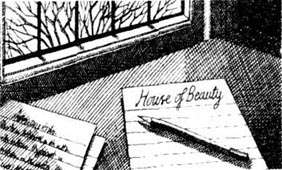
这个故事并不很吸引人。她在玛奇那台旧打字机上完成后，寄给了一家杂志。可是稿子被退了回来，还附带有一封信：感谢您能寄来您的故事，但恐怕我们不能将它出版……
“你一定要再努力一次。”母亲说。克拉拉始终坚信她的女儿们无所不能。
于是阿加莎继续写着，并将这些故事寄给各个杂志——但是它们全都被退了回来。她有一点点失望。
“我要试着写一部小说。”她下定决心。
她有了个构想。她记得和克拉拉在埃及旅行时曾在开罗一家旅馆见到过一个年轻漂亮的女孩，身边总是有两个男人一左一右地陪着她。一天，阿加莎听见有人说：“总有一天这个女孩要在他们两个之间选择一个。”

这就是阿加莎所需要的全部灵感。她开始动手写了起来。这不是一部侦探小说，而是关于住在开罗的一个年轻女孩的故事，故事的名字叫做《沙漠之雪》。它其实是由两个很长的故事拼起来的一本书。写完后，阿加莎把它寄给了三四家出版社，可稿子全部被退了回来。
“啊，天哪！”阿加莎说，“我现在该怎么办呢？”
“为什么不把它拿给伊登·菲尔波茨看看呢？”克拉拉说。
伊登·菲尔波茨是一个住在米勒家附近的作家。他一生中共写过100多部很受欢迎的小说，还有多部剧本。阿加莎有点害怕把她的小说送到这么一位名人手里。但后来她还是同意了，把小说寄了出去。
菲尔波茨先生是个优秀的作家，也是个很和善的人。他仔细读了阿加莎的小说后给她去了一封信。
有些地方你写得还是很不错的，你可以拿着我给你的信去找我的经纪人，休斯·马西……
年仅18岁的阿加莎乘火车去了伦敦。路途很遥远——离她在德文郡托基的家有200多英里，而且当时的火车车速还不是很快。
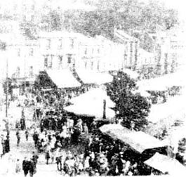
她非常害羞，而休斯·马西则是个身材魁梧让人心生恐惧的人。阿加莎把伊登·菲尔波茨的信拿给他。马西看后和阿加莎谈了一会儿，然后留下了她的书。
于是阿加莎回家等消息。
几个月后，马西把《沙漠之雪》退还给了她。我找不到一家能够出版这本书的出版社，他写道，最好还是不要想它了，开始另写一本吧。
阿加莎失望至极。她后来的确又写了一本书，但在此之前她的生活中发生了其他一些重要的事情。
2．A shy young man
2
A shy young man
Agatha's father, Frederick, died in 1901, when Agatha was eleven years old. He was an American, and was ten years older than Clara. After he died, Clara began to travel a lot, and often took Agatha with her.
In 1911, when Agatha was twenty-one, Clara was ill.
'You need to go somewhere warm and sunny to get better,' Clara's doctor told her.
So Clara decided to go to Egypt again, and she took Agatha with her. They stayed in a hotel in Cairo. There were some English soldiers staying near the hotel, and they often came to the hotel dances.
Agatha was a shy young woman, but she loved to dance. During her stay in Cairo, she went to fifty dances. She met a lot of exciting young men and had a wonderful time.
When she came back to England, she was soon getting invitations to garden parties, tennis parties, dances, and to country houses for the weekend.
Then a young army officer called Reggie Lucy came home from Hong Kong. Agatha was a friend of Reggie's three sisters, and often played tennis with them. But she did not know Reggie. He was a very shy young man who did not go out very much. He liked to play golf but did not like parties or dances.
'I like to play golf, but I'm not very good at it,' Agatha said when she met him.
'I—I could help you,' said Reggie, shyly. He had dark hair and brown eyes. Agatha liked him.
So, while Reggie was in England, he and Agatha played golf nearly every day.
One very warm day they played golf for a little while, then Agatha said, 'I'm hot, Reggie! Shall we have a rest?'
They sat under a tree, out of the sun, and talked. Then, suddenly, Reggie said, 'I want to marry you, Agatha. Did you know that? Perhaps you did. But you are still very young, and—'
'No, I'm not!' said Agatha. 'Not very young.'
'Of course, a pretty girl like you could marry anybody,' said Reggie.
'I don't think I want to marry anybody,' Agatha said. 'I—yes, I think I'd like to marry you!'
'I have to go back to Hong Kong in ten clays' time,' said Reggie. 'And I'll be there for two years. But when I come back, if there isn't anybody...'
'There won't be anybody,' said Agatha.
So Reggie went back to Hong Kong.
Agatha wrote letters to him, and he wrote to her. It was all agreed. When Reggie came home again, they would get married.
dance n. social gathering at which people dance. 舞会。
invitation n. request to go or come somewhere, or do sth. 邀请某人去或来某处或做某事。
golf n. outdoor game in which the player tries to hit a small hard ball into a series of 9 or 18 holes using as few strokes as possible. 高尔夫球运动。
marry v. take (sb.) as a husband or wife. 与（某人）结婚；嫁或娶（某人）。
腼腆的年轻人
2．腼腆的年轻人
阿加莎的父亲弗雷德里克于1901年去世，当时阿加莎只有11岁。他是一个美国人，比克拉拉年长10岁。他去世以后，克拉拉开始到处旅行，并且经常把阿加莎带在身边。
1911年，阿加莎21岁的时候，克拉拉病了。
“您需要去一个气候温暖、阳光充足的地方才能够康复。”克拉拉的医生告诉她。
于是克拉拉决定带着阿加莎重返埃及。她们住在开罗的一家旅馆里。旅馆附近住着一些英国士兵，他们经常来旅馆参加舞会。
尽管阿加莎是个害羞的年轻女子，可她非常热衷于参加舞会。在开罗逗留期间，她参加了50场舞会，遇见了很多让人心动的年轻男子，度过了一段很美好的时光。
回到英国后，很快她便接到了很多邀请，请她去参加游园会、网球聚会、舞会，或是去乡下别墅度周末。
当时，一个名叫雷吉·卢西的年轻军官刚从香港回来。阿加莎与雷吉的三个妹妹是朋友，经常在一起打网球，但是她并不认识雷吉。这个年轻人非常腼腆，不爱外出。他喜欢打高尔夫球，却讨厌参加那些聚会或是舞会。
“我喜欢打高尔夫球，可打得不好。”阿加莎见到他时说。
“我——我可以教你。”雷吉害羞地说。他有着黑色的头发和棕色的眼睛。阿加莎喜欢上了他。
于是，雷吉在英国期间几乎每天都和阿加莎在一起打高尔夫球。

一天，天气非常暖和，打了一会儿高尔夫球之后，阿加莎说道：“雷吉，我觉得很热！我们休息会儿好吗？”
他们坐在一棵能遮住太阳的树下，开始聊天。突然，雷吉说：“我想和你结婚，阿加莎。你知道吗？或许知道吧。可是你还很小，并且——”
“不，我不是！”阿加莎说，“不是很小了。”
“当然了，像你这样的漂亮女孩儿可以嫁给任何人。”雷吉说。
“我不是任何人都想嫁，”阿加莎说，“我——是的，我想嫁给你！”
“十天后我就必须返回香港了，”雷吉说，“我要在那儿待两年。如果我回来的时候仍然没有其他人……”
“不会有其他人了。”阿加莎说。
于是雷吉返回香港了。
他们的信件你来我往。一切都已经安排好。雷吉再回来时，他们就结婚。
3．Tea at the railway station
3
Tea at the railway station
On October the 12th, 1912, when Agatha was twenty-two, she went to a dance at the home of Lord and Lady Clifford. They lived near Chudleigh, twelve miles from Torquay, and there were many young people there for Agatha to talk to.
During the evening a young army officer came up to her.
'Will you dance with me?' he asked Agatha.
'Me?' said Agatha. 'Oh, yes, all right.'
He was tall and good-looking, with friendly blue eyes, and his name was Archibald Christie. Agatha liked him immediately. They danced together many times that evening, and Archie told her his plans.
'I want to fly,' he said, 'and I'm trying to get into the Royal Flying Corps.'
'How exciting!' said Agatha.
A week later, she was having tea with some friends at a house opposite Ashfield, her home, when there was a telephone call for her. It was her mother.
'Come home, will you, Agatha?' said Clara. 'There's a young man here. He's just arrived and I'm giving him tea. I don't know him, and I think he wants to see you.'
Agatha had to leave her friends and hurry home, so she was not very pleased. But when she got home, she found Archie Christie waiting for her.
'Hello,' he said. 'I was in Torquay and—and I thought that perhaps it would be nice to see you.' His face was red and he looked at his shoes.
Agatha smiled.
Archie stayed for the rest of the afternoon, and for supper that evening. When it was time for him to leave, he said, 'Will you come to a concert in Exeter with me, Agatha? We can go to the Redcliffe Hotel for tea after the concert.'
'I'd love to,' said Agatha, then looked at Clara. 'Can I, mother?'
'A concert, yes, Agatha,' said Clara. 'But tea at a hotel? No, I don't think so. Not a hotel.'
'Perhaps I could take Agatha to tea in—in the restaurant at Exeter railway station!' said Archie.
Agatha tried not to smile, but her mother agreed. So Agatha and Archie went to the concert—and then had tea at Exeter railway station!
'There's a New Year's dance in Torquay on the second of January,' said Agatha, when Archie took her home later. 'Will you come?'
He smiled. 'Of course,' he said. 'I want to see you as often as I can.'
But when Archie came to the New Year's dance he was very quiet and did not seem happy. He seemed to be worried about something, but Agatha said nothing. Two days later, on the 4th of January, 1913, they went to another concert together. Archie was still very quiet, and after the concert Agatha asked, 'What's wrong, Archie?'
'The Royal Flying Corps have said "yes" to me,' said Archie. 'I have to leave Exeter in two days' time. I have to go to Salisbury.' He looked at her. 'Agatha, you've got to marry me! There will never be anyone for me, only you! I've known that since our first evening together, at the Cliffords' dance.'
Agatha was very surprised. 'But—but I can't marry you. I've already told Reggie that I'll marry him.' And then she told him about Reggie Lucy.
'You didn't marry him before he went away,' said Archie. 'Why not? It's because you don't really love him!'
'We thought it was better to wait—' began Agatha.
'I won't wait,' said Archie. 'I want to marry you next month, or the month after.'
'We can't!' said Agatha. 'We haven't got any money. How will we live?'
But she did want to marry Archie.
'Archie has asked me to marry him, and I want to. I want to very much!' she told her mother.
Clara was very surprised. 'You must wait,' she told them both. 'I like you, Archie, but you are only twenty-three years old, and neither of you has any money.'
So Archie went to Salisbury, and he and Agatha waited. Agatha wrote to Reggie Lucy. It was a difficult letter to write, but Reggie wrote a very kind letter back to her. 'Don't worry about it,' he told her. 'I understand.'
* * *
In August 1914, England was suddenly at war with Germany. Archie went to France with the Royal Flying Corps, and Agatha went to work as a volunteer nurse at the Torbay Hospital in Torquay.
Archie came back to England for five days in December, and Agatha went up to London to meet him. Then the two of them went down to Bristol, where Archie's mother lived. They could not wait any longer. They wanted to get married.
Archie's mother was not happy about this, but Clara thought differently. 'Yes, get married now,' she said. 'There's a war on. Who knows what will happen? Be happy while you can.'
So Agatha and Archie were married at last on the 24th of December, 1914. Two days later, Archie went back to the war, and Agatha did not see him again for six months.
* * *
During the summer of 1915, Agatha was ill and could not do any nursing work at the hospital for three or four weeks. Then, when she returned, she went to work in the hospital dispensary. And here she learned something which was very useful for a writer of detective stories. She learned about poisons.
immediately adv. at once; without delay. 立刻；马上；当即；毫不耽搁。
opposite prep. facing. 面对。
hurry v. do sth. or move quickly or too quickly; rush. 迅速的或仓促的做某事或移动；赶紧。
concert n. musical entertainment given in public by one or more per formers. 音乐会。
restaurant n. public place where meals can be bought and eaten. 餐馆；饭店。
go away leave a place. 走开；离开。
worry about be anxious about. 担忧；担心；发愁。
be at war be in a state of war. 处于交战状态。
volunteer n. person who offers to do sth. without being compelled or paid. 自愿或无偿地效劳的人；志愿者。
dispensary n. place in a hospital, school, etc. where medicines are given out. （医院、学校等的）药房。
车站茗谈
3．车站茗谈
1912年10月12日，阿加莎22岁了，她去参加在克利福德勋爵夫妇家里举办的一场舞会。他们住在离托基12英里的查德利附近，在那儿阿加莎可以和许多年轻人聊天。
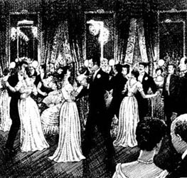
晚上的时候一位年轻军官走到她面前。
“我可以请您跳舞吗？”他问阿加莎。
“我吗？”阿加莎问，“哦，好，当然可以。”
他高大英俊，蓝色的眼睛透着和善，他的名字叫阿奇博尔德·克里斯蒂。阿加莎立刻就喜欢上了他。那晚他们跳了一支又一支舞，而且阿奇给她讲了自己的计划。
“我想做一名飞行员，”他说，“我正努力进入皇家航空队。”
“多棒啊！”阿加莎说。
一星期后，她正和几个朋友在她的家——阿什菲尔德——对面的房子里喝茶，突然接到一个电话，是她母亲打来的。
“阿加莎，回家来好吗？”克拉拉说，“有一个年轻人正等着你。他刚到，我正给他沏茶。我不认识他，我想他是想见你。”
阿加莎只得告别朋友赶快回家，心里不太高兴，但是到家后，她发现等着她的那个人是阿奇·克里斯蒂。
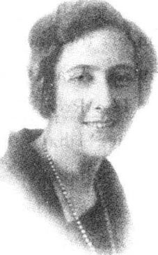
“您好。”他说，“我路过托基，所以——所以我想最好能见见您。”他的脸变得通红，低头看着自己的鞋。
阿加莎笑了。
阿奇待了一个下午，还留下来吃了晚饭。临走时，他说：“阿加莎，能和我一起参加埃克塞特的音乐会吗？听完音乐会后我们还可以到雷德克利夫旅馆喝茶。”
“好的。”阿加莎说，然后看看母亲，“妈妈，我可以去吗？”
“阿加莎，你可以去听音乐会，”克拉拉说，“但是在旅馆喝茶？不行，我想不可以。旅馆可不行。”
“或许我可以带阿加莎去——去埃克塞特车站的一家餐馆喝茶！”阿奇说。
阿加莎强忍住笑，她母亲最终还是同意了。于是阿加莎就和阿奇一起去听了音乐会——然后在埃克塞特车站喝茶！
“1月2日托基有一场新年舞会。”在阿奇送她回家的路上阿加莎说，“你能来吗？”
他笑了笑。“当然可以，”他说，“我想尽可能多地见到你。”
可是阿奇来参加新年舞会的时候却非常沉默，看起来很不开心，心事重重。阿加莎什么也没问。两天后，也就是1913年1月4日，他们一起去参加另一场音乐会，阿奇依然很沉默。音乐会后阿加莎问他：“阿奇，你怎么了？”
“皇家航空队已经同意接收我了。”阿奇说，“两天后我就必须离开埃克塞特，去索尔兹伯里。”他望着她，“阿加莎，你必须嫁给我！除了你，我不会娶任何人！从我们在克利福德家的舞会上共度的第一晚我就知道了。”
阿加莎惊讶万分。“可是——可是我不能嫁给你。我已经告诉雷吉要和他结婚的。”接着她向阿奇讲了雷吉·卢西的事情。
“在他走之前你没有嫁给他，”阿奇说，“为什么没有呢？因为你并不真正爱他！”
“我们想着最好是等——”阿加莎开始解释。
“我不要等，”阿奇说，“我想下个月就和你结婚，或是下下个月。”
“不行！”阿加莎说，“我们一点钱也没有，怎么生活呢？”
但她确实想和阿奇结婚。
“阿奇已经向我求婚了，我想嫁给他。我真的很想嫁给他！”她告诉母亲。
克拉拉大吃一惊。“你们必须再等些时候，”她告诉他们两个，“我很欣赏你，阿奇，可是你只有23岁，并且你们两个都没有钱。”
于是阿奇去了索尔兹伯里，他和阿加莎都等待着。阿加莎给雷吉·卢西写了一封信，这封信写起来异常艰难，不过雷吉的回信却非常善解人意。“不要担心，”他告诉她，“我能理解。”
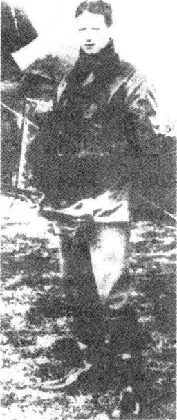
* * *
1914年8月，英国突然与德国开战。阿奇随皇家航空队开赴法国，而阿加莎则在托基的托贝医院做了一名志愿护士。
12月，阿奇回到了伦敦，可只能停留五天，于是阿加莎北上伦敦与他相会。然后两人又南下去了阿奇母亲居住的布里斯托尔。他们再也不能等待下去了。他们要结婚。
阿奇的母亲并不是很赞成，不过克拉拉却有不同想法。“好，现在就结婚吧，”她说，“战争正在进行。谁能预知明天呢？及时行乐吧。”
于是1914年12月24日，阿加莎和阿奇终于结婚了。两天后，阿奇返回了战场，这一分离便是六个月。
* * *
1915年夏天，阿加莎病倒了，有三四个星期不能做任何护理工作。病好后，她转到了医院药房工作。在这里她学到了一些对成为一个侦探小说家大有益处的东西。她认识了毒药。
4．A detective story
4
A detective story
One day, some time before the war, Agatha was talking with her sister, Madge, about detective stories. They both enjoyed reading this kind of book very much.
'I'd like to try and write a detective story myself,' said Agatha.
'You couldn't do it,' said Madge. 'They're very difficult to do. I've thought about it.'
'Well, one day I'm going to try,' said Agatha.
The idea stayed in Agatha's head, and she wanted to show Madge that she could do it. And when, years later, she went to work in the hospital dispensary, she again began to think about writing a detective story.
'There must be a murder in it, of course,' she thought. The questions ran busily around inside her head. 'But what kind of murder? A death by poisoning? Who will die? Who will the murderer be? When? How? Why? Where? And what about a detective?'
There were some Belgian people living in Torquay, who were there because of the war in Belgium. Clara, like everyone in the town, was very kind and helpful to them when they arrived. She gave them chairs and beds for their homes, and tried to make them feel happy and comfortable. Now, Agatha suddenly remembered them.
'What about a Belgian detective?' she thought, and began to build the character in her head. 'He'll be a very clever, very tidy little man. But what shall I call him? I know, I'll call him Hercules!' She smiled. 'It's a good name for a small man. And his second name? Poirot. Hercules—no, Hercule Poirot! Yes, that's it.'
Agatha thought about her detective story during every quiet minute in the dispensary. She knew a lot about poisons now. She knew which poisons worked quickly, and which worked slowly. She knew how much to give, and what different poisons smelt and tasted like. She knew how people died from poisons—did their faces turn blue? Did they die in their sleep, or die screaming in pain? A good detective—and a good writer of detective stories—must know these things. She began to write her story at home, and used Madge's old typewriter again.
'What are you doing?' Clara asked her one day.
'I'm writing a detective novel,' said Agatha, 'I want to finish it, but it's very difficult.'
'Why don't you finish it during your holiday?' said Clara. 'Go away somewhere nice and quiet, and take it with you. Where do you want to go? Dartmoor?'
'Yes!' said Agatha. 'Dartmoor!'
Dartmoor was a beautiful, lonely moor in Devon. Agatha took Madge's typewriter with her and stayed at the Moorland Hotel at Hay Tor. It was a large hotel with a lot of rooms, but not many people were staying there. For two weeks she wrote in her room every morning, then went for long walks alone on the moor in the afternoons. Everything went well. The characters seemed to come alive inside her head, and during her walks she planned her writing for the next day.
She finished the last half of the book during her holiday, and soon after she sent it to a publisher. They returned it, but Agatha was not surprised. She sent it out again, but it came back once more. She sent it to a third publisher, but they returned it, too. Then she sent it to The Bodley Head publishing company—and forgot all about it.
Two years went by. Archie came back to work in London, the war ended, and Agatha had a baby—Rosalind. The three of them were living in a flat in London when a letter arrived one morning in 1919.
It was from The Bodley Head. Agatha quickly opened the letter, and saw the words:
...Will you call at our offices? ...we would like to talk about your book...
'It's about my book—The Mysterious Affair at Styles,' she told Archie. 'I think they want to publish it!'
'Then you must go and see them at once!' said Archie.
Agatha went to the publishers' office. She met John Lane, a small man with white hair.
'Do sit down,' he said. He had a kind voice, and blue eyes that looked carefully at Agatha. 'Some of my readers think that we could publish your book. But you will need to change the last chapter. And there are a few other small things...'
Agatha was too excited to listen. She was happy to do anything. The Mysterious Affair at Styles was her first detective story, and she wanted to see it in the bookshops. So she wrote a different ending for it and changed one or two more small things, and at last John Lane was pleased with it.
poison v. kill or harm sb./ sth. with poison. 用毒药毒死或害死某人（某物）。
comfortable adj. allowing, producing or having pleasant bodily relaxation. 舒适的；安逸的；使人舒服的。
character n. person in a novel, play, etc. （小说、戏剧中的）人物。
scream vi. give a long piercing cry of fear, pain or excitement; cry in this way. （因恐惧、痛苦或兴奋）尖声喊叫；喊出。
moor n. open uncultivated high area of land, esp. one covered with heather. 漠泽，高沼，荒野，旷野（尤指石南丛生者）。
alive adj. living. 活着。
soon after a short time after. 之后不久。
go by (of time) pass. （指时间）过去。
mysterious adj. full of mystery; hard to understand or explain. 神秘的；不可思议的；难解的。
chapter n. division of a book. （书中的）章，篇，回。
bookshop n. shop which sells many books. 书店。
ending n. end, esp. of a story, film, play or word. 结尾，结局（尤指故事、电影、戏剧或词语）。
一部侦探小说
4．一部侦探小说
战前的某一天，阿加莎正和姐姐玛奇讨论侦探小说。两人都十分喜爱这类小说。
“我想试着自己写一部侦探小说。”阿加莎说。
“你写不了的，”玛奇说，“这类小说很不好写。我也已经考虑过了。”
“嗯，总有一天我要尝试一下。”阿加莎说。
这种念头在阿加莎的脑海中挥之不去，她要向玛奇证明她能做到。几年过去了，当她到医院药房工作时，又有了一种写侦探小说的冲动。
“小说里面肯定要有一桩谋杀案。”她想。她的脑子里萦绕着各种各样的问题，“但是什么样的谋杀案呢？施毒致死吗？谁会死呢？谁又会是凶手？时间？手段？动机？地点？再有一个侦探如何？”
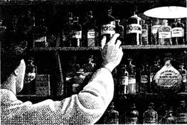
在托基住着一些因比利时发生战争逃到此地来的比利时人。和小镇上的其他人一样，克拉拉在这些比利时人到来的时候给予了他们热心的帮助。她给他们的家里送来椅子和床，尽量让他们感到开心和舒适。现在，阿加莎突然记起了他们。
“一个比利时侦探如何呢？”她想，并开始在那脑子里勾勒这个人物的形象，“他是一个聪明至极、穿着非常整洁的矮小男人。可是我该叫他什么好呢？知道了，我要叫他赫尔克里士！”她笑了笑，“给一个身材矮小的男人起这样的名字刚好。他的姓呢？波洛。赫尔克里士——不，赫尔克里·波洛！对，就是它了。”
药房里只要一安静下来，阿加莎就构思她的侦探小说。现在她对毒药的药性已经了如指掌。她清楚哪些毒药发作很快，哪些又很慢，该用多少剂量，各种毒药的气味和味道又是怎样的。她知道人是怎样中毒身亡的——他们会不会脸色发青？他们会在睡梦中死去，还是在痛苦的尖叫声中死去呢？一名出色的侦探——以及一名出色的侦探小说家——必须熟知这些东西。她开始在家动手写故事了，用的依然是玛奇的旧打字机。
“你在干什么？”有一天克拉拉问她。
“我在写一部侦探小说，”阿加莎回答，“我想写完，可这真的不容易。”
“为什么不去休个假完成它呢？”克拉拉说，“带着稿子去一个既美丽又安静的地方。想去哪里呢？达特穆尔？”
“对！”阿加莎说，“达特穆尔！”
达特穆尔是德文郡一片美丽却人迹罕至的荒野。阿加莎带着玛奇的打字机住在了海伊托尔的穆尔兰旅馆。这是个很大的旅馆，房间很多，却没有多少客人入住。在这儿的两个星期里，她每天上午都在房间里写作，下午则在荒野里独自散步很长时间。一切进展顺利。在她的脑子里，小说中的人物似乎都活了起来，她边散步边构思第二天的写作。
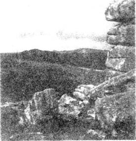
在假期里她完成了小说后半部分的创作，并很快把它寄到一家出版社。他们把稿子退了回来，但阿加莎对退稿一点也不感到惊讶。她又把它寄了出去，但又被退了回来。她又把小说寄给另一家出版社，但也遭到了同样的厄运。后来她把小说寄给了博德利·黑德出版公司——便把这件事情抛在脑后了。
两年过去了。战争结束了，阿奇回到伦敦工作，阿加莎也有了一个孩子——罗莎琳德，一家三口住在伦敦的一间公寓里。1919年的一天早晨，来了一封信。
是博德利·黑德公司寄来的。阿加莎赶快把信拆开，信上写着：
……您能来我们的办公室吗？……我们想和您商讨一下关于您的书的问题……
“是关于我的《斯泰尔斯的神秘案件》的，”她告诉阿奇，“我想他们要出版它了！”
“那你就马上动身去见他们吧！”阿奇说。
阿加莎来到了出版社办公室，见到了约翰·莱恩，一个白头发的矮小男人。
“请坐，”他说。他的声音很亲切，蓝色的眼睛仔细地打量着阿加莎。“有些读者认为我们应该出版您的书。但是您需要修改一下最后一章。另外还有一些小问题……”
阿加莎兴奋得几乎听不下去了。她愿意做任何事情。《斯泰尔斯的神秘案件》是她的首部侦探小说，她想在书店里看到自己写的书。于是她重写了故事的结局，并改动了其他一两个微不足道的地方，最后约翰·莱恩满意地接受了。
5．A good detective-story writer
5
A good detective-story writer
Agatha's first book, The Mysterious Affair at Styles, was published in 1920. But before this, she began writing another book.
It was Archie's idea.
'Mother is finding it difficult to pay all the bills at Ashfield,' Agatha told him.
'Why doesn't she sell Ashfield?' Archie said to Agatha. 'The house is too big for just one person. Then she can buy something smaller.'
'Sell Ashfield?' said Agatha. 'Oh, no! She can't! I love it—and it's our family home.'
'Then why don't you do something about it?' said Archie.
'Do something? What do you mean?'
'Why don't you write another book?' said Archie. 'Perhaps it will make a lot of money.'
Agatha thought about it. Ashfield was her family home, and it must stay in the family. Could she do anything to help?
'Perhaps I could write another book,' she thought. 'But what can it be about?'
The answer came one day when she was having tea in a tea-shop. Two people were talking at a table near her. Agatha heard a name—and began to listen. They were talking about somebody called Jane Fish.
'What a strange name,' thought Agatha. 'But what a good beginning for a story! Somebody hears a strange name in a tea-shop. And then...? Wait, perhaps "Jane Finn" will be better. Yes! Now, let me think...'
And before Agatha left the tea-shop, an idea for a story was running around inside her head. She went home and began it immediately.
She called it The Secret Adversary, and the book was published in 1922.
The story did not have the Belgian detective Hercule Poirot in it, but her next book, Murder on the Links , did. Readers loved Poirot. He was a very short, tidy little man, with green eyes, black hair, and a beautiful black moustache. And, like another famous detective, Sherlock Holmes, he was very, very clever. He was not shy about this, and was always telling other characters in the story just how clever he was.
Other books followed, some with Poirot, some without—The Man in the Brown Suit, Poirot Investigates, and The Secret of Chimneys.
Hughes Massie, the agent, was helping Agatha now. 'You need another publisher,' he told her. 'A publisher who will pay you more than The Bodley Head. You're a good detective-story writer, Agatha, and your books are beginning to sell well.'
So Massie sent Agatha's next book — The Murder of Roger Ackroyd — to William Collins' publishers. It was an important book for Agatha.
The Murder of Roger Ackroyd came out in the spring of 1926—and people began to talk about it immediately. What did they talk about? The big surprise at the end of the book!
'That's cheating!' some people said, when they got to the end and found out the name of the murderer.
'No, it's not,' said other readers. 'It's a very clever story.'
'What's the matter with everybody?' Agatha said to Archie. 'I didn't cheat. It's wrong to say that. People must read the story carefully.'
And she was right. All the clues were there in the story, and a very clever reader could guess the name of the murderer. But most people couldn't.
(So what was the surprise at the end, and who was the murderer? The only way to find out is to read the book!)
After The Murder of Roger Ackroyd was published, more and more people began to buy Agatha's books, and Agatha had more money to spend.
The Christies bought a house at Sunningdale, about thirty miles from London.
'What shall we call it?' said Agatha.
'Styles,' said Archie, 'after your first book.'
And they put a picture of the front cover of the book, The Mysterious Affair at Styles, on the wall.
But not long after they moved to Sunningdale, something happened that put Agatha's name on the front pages of every newspaper in England.
She disappeared.
People think that it happened because she was very unhappy at this time. First, her mother died. And then Agatha found out that Archie was in love with a young woman called Nancy Neele.
bill n. written statement of money owed for goods or services supplied. 账单。
tea-shop n. (usu. small) restaurant where tea and light meals are served. 茶馆。
moustache n. hair allowed to grow on the upper lip. 髭，（嘴唇上面的）胡子。
pay vt. give money. 付钱。
cheat vi. act dishonestly or unfairly in order to win an advantage or profit. 欺骗。
clue n. fact or piece of evidence that helps to solve a problem or reveal the truth in an investigation. 线索；端倪。
after prep. in the style of; in imitation of. 依照；仿照。
front page 头版。
disappear vi. no longer be visible; vanish. 消失；失踪。
出色的侦探小说家
5．出色的侦探小说家
1920年，阿加莎的第一本书《斯泰尔斯的神秘案件》出版了。但在此之前，她已经着手写另一本书了。
这是阿奇的主意。
“妈妈觉得越来越难对付阿什菲尔德的一大堆账单了。”阿加莎对他说。
“她为什么不把阿什菲尔德卖掉呢？”阿奇对阿加莎说，“那所房子只住一个人未免显得太空荡了些。她可以买一所小点的房子。”
“卖掉阿什菲尔德？”阿加莎说，“哦，不行！她可不能那么做！我爱它——那是我们家族的房子。”
“那你为什么不为它做点什么呢？”阿奇说。
“做点什么？你指的是什么？”
“你为什么不再写一本书呢？”阿奇说，“这可能会赚一大笔钱。”
阿加莎考虑了一下。阿什菲尔德是她家族的房子，必须留下来。她能帮上什么忙呢？
“或许我可以再写一本书。”她想，“但写什么好呢？”
一天在茶馆喝茶时她突然有了灵感。有两个人坐在邻桌聊天。阿加莎无意中听见了一个名字——便开始听了下去。他们在聊一个叫做简·菲什的人。
“好奇怪的名字啊，”阿加莎想，“但作为故事的开端多好！某个人在茶馆无意间听到一个很奇怪的名字。然后……？等等，可能‘简·芬恩’更好一些。对！现在让我想想……”
在阿加莎离开茶馆之前，关于故事的构思已经在她的头脑中迅速地成形了。她回到家立刻动手写了起来。
她把它叫做《神秘对手》，这本书于1922年出版。
这个故事里没有比利时侦探赫尔克里·波洛，可他在她的下一本书《高尔夫球场命案》中又出现了。读者们喜欢波洛。他身材矮小，穿着整洁，有着绿色的眼睛，黑色的头发和漂亮的黑胡子，并且就像另外一个著名侦探舍洛克·福尔摩斯一样，他聪明至极。对这一点他并没有感到不好意思，反而总是告诉故事里其他的人物他有多么聪明。
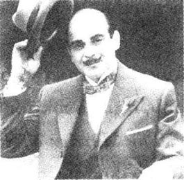
更多的书陆续出版了，有些里面有波洛，有些则没有——像《棕衣男子》、《波洛出击》和《烟囱里的秘密》。
休斯·马西现在是阿加莎的经纪人。“你需要重新找一家出版社，”他告诉她，“一家比博德利·黑德付酬更高的出版社。阿加莎，你是一名出色的侦探小说家，你的书开始变得很畅销了。”
于是马西把阿加莎的另一本书——《罗杰·阿克罗伊德命案》——送到了威廉·柯林斯出版社。这本书对阿加莎来说至关重要。
《罗杰·阿克罗伊德命案》于1926年春天出版——书一出版，立刻便成为人们争论的对象。他们在争论什么呢？书中出乎意料的结局！
“这是欺骗！”一些人读到书末发现凶手是谁后如是说。
“不，这不是欺骗，”另外一些读者说，“这个故事写得极其高明。”
“大家这是怎么了？”阿加莎对阿奇说，“我没有欺骗，这样说是不对的。大家必须仔细读故事才行。”
她是正确的。所有的线索都在故事中，一个极其聪明的读者是能够猜出凶手的名字的。可惜大多数人都没能做到。
（所以这出人意料的故事结局是怎样的？凶手到底是谁？只有读了这本书才能知道！）
《罗杰·阿克罗伊德命案》出版后，越来越多的人开始买阿加莎的书了，她的手头变得宽绰起来。
克里斯蒂一家在离伦敦30英里的森尼达尔买了一所房子。
“我们叫它什么好呢？”阿加莎说。
“斯泰尔斯，”阿奇说，“以你的第一本书来命名。”
他们把一幅《斯泰尔斯的神秘案件》封面的照片挂在了墙上。
然而就在他们移居森尼达尔不久，一件事情发生了，阿加莎的名字随之出现在英国大大小小的报纸的头版。
她失踪了。
人们认为她的失踪源于她这段时间的不快。先是她母亲的去世。然后是阿加莎发现阿奇竟然爱着一个叫南希·内莱的年轻女人。
6．Agatha disappears
6
Agatha disappears
On the morning of Friday, the 3rd of December, 1926, Archie left Styles and went to stay with some friends for the weekend. Nancy Neele was also staying at this house for the weekend. Perhaps Agatha knew this, perhaps she didn't—we can't be sure.
Nobody knows what Agatha was thinking, late that dark winter evening. Rosalind, now seven years old, was in bed. The Christies' two housemaids were in the kitchen. But we know this. At about eleven o'clock that evening, Agatha went out and drove away in her car.
She did not return home that night.
* * *
On Saturday morning, a woman arrived by taxi at the Hydro Hotel in Harrogate, Yorkshire. The Hydro was one of Harrogate's biggest and best hotels, near the centre of the town.
'Can I have a room, please?' the woman asked. She was carrying a small suitcase, and she looked very tired.
'Yes, of course,' said the man behind the hotel desk. 'There's a nice room on the first floor—room number five. It has hot and cold water, and the cost is seven pounds for a week.'
'Thank you, that will be all right,' said the woman.
'What name, please?' asked the man.
'Mrs Teresa Neele,' said the woman with the suitcase.
* * *
Also on that cold Saturday morning in December, a fifteen-year-old boy was walking beside a lake called the Silent Pool. This was at a place called Newlands Corner, about fourteen miles from Sunningdale. The boy's name was George Best.
Suddenly, George saw a car. It was off the road, down by the lake, but the lights were on.
'That's strange,' he thought. 'Why is that car down there, and why are the lights on?' And he went to have a better look.
The car was empty, but the driver's door was open. George looked inside. He saw a coat, and an open suitcase. Half-out of the suitcase were three dresses, some shoes—and some papers with the name 'Mrs Agatha Christie' on them.
George quickly went to find a policeman.
* * *
The newspapers were soon full of the story, and Agatha's picture was on the front pages. Where was the detective-story writer? Was she dead? Was she murdered? Did she kill herself?
The Daily News wanted answers to these questions, and said, on December the 7th, that it would give ￡100 to the first person with the answers. By the next weekend, hundreds of policemen and thousands of people were looking for her.
'Did your wife ever talk about disappearing?' a Daily Mail reporter asked Archie.
'Yes,' said Archie. 'She once told her sister, "I could disappear any time I wanted to. I would plan it carefully, and nobody would find me." Perhaps this happened. Or perhaps she's ill and can't remember who she is.'
The police asked Archie lots of questions, watched his house, and followed him to his office.
'They think I've murdered Agatha,' he told a friend.
* * *
The woman at the Hydro Hotel had breakfast in her room each morning, and sat quietly reading in the hotel sitting-room in the afternoons. She said 'Good morning' and 'Good afternoon' to other people in the hotel, and seemed worried because there were no letters for her.
But one of the chambermaids went to see Mrs Taylor, the wife of the hotel manager.
'Mrs Neele looks like the woman in the Daily Mail picture,' said the chambermaid. 'You know the one—Agatha Christie!'
Mrs Taylor spoke to her husband about it, but they decided to say nothing. They did not want any trouble at the hotel.
But two more people at the Hydro Hotel were also looking carefully at 'Mrs Teresa Neele'.
Bob Tappin and Bob Leeming played music in the hotel each evening, and both of them watched the quiet woman in the corner of the room—and began to think.
'I'm sure that Neele woman is Agatha Christie,' Bob Tappin said to his friend one evening.
'I think you're right,' Bob Leeming agreed. 'What shall we do about it?'
And the next day they went to the police.
The police immediately told Agatha's husband, and Archie Christie arrived at the Hydro Hotel at 6.45pm on Tuesday, the 14th of December. When his wife walked out of the sitting-room, Archie saw her and went up to her.
'Hello, Agatha,' he said.
She looked at him carefully, but did not seem sure who he was. 'Hello,' she said.
* * *
The hotel was soon full of newspaper reporters.
Archie told them later, 'I don't think that my wife knows who she is. She doesn't know me, and she doesn't know where she is.'
He and Agatha left the hotel the next day. There were reporters everywhere. They followed the Christies to the railway station, trying to get pictures of the frightened Agatha, who was hiding her face behind her hands. She looked thin and her face was white.
And in London, hundreds of people were waiting at King's Cross Station for the train from Harrogate. Everyone wanted to see the 'woman of mystery' and her husband. Their lives now seemed to be like something out of one of her detective stories.
Archie helped the silent, frightened Agatha through the crowd. Reporters shouted questions at them and took pictures, but neither Archie nor Agatha said a word.
And for the rest of her life, Agatha never again spoke about Harrogate, the Hydro Hotel, or 'Teresa Neele'. But what really happened that night after she left Styles? Why did she leave her car? How did she get to Harrogate? It was always a mystery.
It still is.
housemaid n. woman servant in a house, esp. one who cleans rooms, etc. （尤指清扫房间等的）女仆，女佣人。
suitcase n. case with flat sides, used for carrying clothes, etc. when travelling. 手提衣箱；小提箱。
be full of be filled with. 满的，充满……的。
look for search for or try to find sb./sth. 寻找或寻求某人（某物）。
reporter n. person who reports news for the media. 记者；新闻通讯员。
chambermaid n. woman whose job is cleaning and tidying bedrooms, usu. in a hotel. 以打扫和整理卧室为工作的妇女（通常指旅馆中的）；女服务员；女侍。
in the corner of the room 在屋角。
crowd n. huge number of people gathered together in the open. 人群。
阿加莎失踪了
6．阿加莎失踪了
1926年12月3日，星期五，阿奇在上午离开了斯泰尔斯，去和一些朋友过周末。南希·内莱也在那里。阿加莎或许知道这些，或许不知道——我们不得而知。
没人知道在那个漆黑的冬夜阿加莎在想些什么。七岁的罗莎琳德已经睡了。克里斯蒂家的两个女佣在厨房里。但我们所知道的是，那天晚上大概11点钟，阿加莎走出房门，驾车离去。
那晚她没有回家。
* * *
星期六早晨，一个女人乘坐出租车来到位于约克郡哈罗盖特的海卓旅馆。海卓是哈罗盖特最大、最好的旅馆，在镇中心附近。
“请给我开个房间好吗？”那个女人说。她带着一个小小的衣箱，看上去非常疲惫。
“好，当然可以，”宾馆前台后面的服务员说，“二楼有一个很好的房间——五号房。冷热水都有，每星期七英镑。”
“谢谢你，这就可以了。”那女人说。
“请问您的名字？”服务员问。
“特里萨·内莱夫人。”带着衣箱的女人答道。
* * *
同样是在那个12月寒气袭人的星期六早晨，一个15岁的男孩儿正沿着一个叫静塘的湖走着。这个地方名叫纽兰兹·科纳，离森尼达尔14英里。男孩儿名叫乔治·贝斯特。
突然，乔治看见了一辆汽车。它停在路边，车头倾向湖边，但车灯依然亮着。
“真奇怪，”他想，“这辆车为什么停在那儿，车灯怎么还亮着呢？”他走过去想看个仔细。
车里没人，驾驶员那边的车门敞开着。乔治向里瞧了瞧，看见一件大衣和一个打开了的衣箱。箱子内外散落着三件连衣裙，几只鞋——还有几张写着“阿加莎·克里斯蒂夫人”的纸。
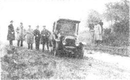
乔治飞快地跑去叫警察。
* * *
很快报纸上满篇都是这件事的报道，头版上还有阿加莎的照片。这个侦探小说家在哪里？她死了吗？被谋杀了吗？还是自杀了？
《每日新闻》想找到这些问题的答案，12月7日，它声称谁先找到答案谁就可以赢得100英镑。到了下一个周末的时候，成百上千的警察和成千上万的人都在寻找她。
“你的妻子有没有提起过失踪？”《每日邮报》的记者问阿奇。
“提起过，”阿奇说，“她曾经对她姐姐说：'我什么时候想失踪就会失踪。我会有很周密的计划，没人找得到我。'可能这真的发生了。或者她可能是病了，记不得自己是谁了。”
警方问了阿奇很多问题，监视他的房子，并跟踪他到办公室。
“他们认为是我谋杀了阿加莎。”他对一个朋友说。
* * *
住在海卓旅馆的那个女人每天在她的房间里用早餐，下午坐在旅馆大厅里静静地看书。她对旅馆里的其他人都说“早上好”和“下午好”，因为没有收到来信而显得有些焦虑。
旅馆的一个女服务员找到旅馆经理的妻子泰勒夫人。
“内莱夫人看起来很像是《每日邮报》照片上的那个女人，”这个女服务员说，“您知道的——阿加莎·克里斯蒂！”
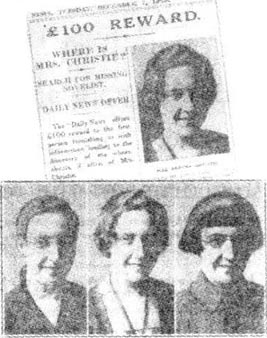
泰勒夫人和丈夫说了这件事，为了不给旅馆带来麻烦，他们决定暂不声张。
但是在海卓旅馆里还有两个人在仔细打量着这位“特里萨·内莱夫人”。
鲍勃·塔平和鲍勃·利明每晚都在旅馆里演奏音乐，他们都看见了那个安安静静坐在屋子角落里的女人——并开始琢磨。
“我肯定那个叫内莱的女人是阿加莎·克里斯蒂，”一天晚上鲍勃·塔平对他的伙伴说。
“我想你是对的，”鲍勃·利明表示赞同，“我们该怎么办呢？”
第二天他们去了警察局。
警方立即通知了阿加莎的丈夫，阿奇·克里斯蒂在12月14日星期二的下午6:45赶到了海卓旅馆。当他的妻子走出大厅时，阿奇看到了她并迎上前去。
“你好，阿加莎。”他说。
她认真地打量着他，却不敢肯定这是谁。“你好。”她说。
* * *
旅馆里很快就挤满了报社记者。
后来阿奇对他们说：“我想我妻子不知道自己是谁。她不认得我，也不知道自己身在何处。”
第二天他和阿加莎离开了旅馆。到处都是记者，他们跟随克里斯蒂夫妇到了火车站，想拍下阿加莎受惊吓的照片，阿加莎只好用手捂住自己的脸。她看上去很消瘦，脸色苍白。
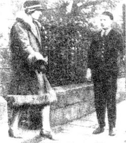
在伦敦，有成百上千个人在金斯克罗斯火车站等待从哈罗盖特开来的火车。大家都想目睹一下这位“神秘女人”和她丈夫的风采。他们的生活现在看起来就像她的侦探小说里的某些情节。
阿奇保护着沉默惊恐的阿加莎穿过人群。记者们边冲他们大声地提问边拍摄照片，阿奇和阿加莎均保持缄默。
阿加莎有生之年再也没有谈起过哈罗盖特、海卓旅馆或是特里萨·内莱。在她离开斯泰尔斯的那天晚上究竟发生了什么事？她为什么丢下了汽车？她又是如何到的哈罗盖特？这些都将永远成为不解之谜。
至今如此。
7．A young archaeologist
7
A young archaeologist
During the first weeks of 1927, Agatha went to stay with Madge and her husband in Cheadle, near Manchester. Archie stayed at Styles, but he wanted to marry Nancy Neele, and he asked Agatha for a divorce. At first she would not agree, but at last she said yes, and they were divorced in April 1928. Rosalind lived with Agatha.
'I don't want to use the name "Christie" again,' Agatha told her publishers. 'I will think of another name to use.'
'But you can't change it now,' they said. 'Your readers know "Agatha Christie"—that's why they buy your books. If you change your name, nobody will know who you are!'
In the end, Agatha agreed to keep the name Christie, but she was not happy about it. But William Collins was right. Thousands of people in England (and America) were reading Agatha's books now.
Then, in the autumn of 1928, Agatha decided to visit the West Indies. Rosalind was at school, and Agatha wanted a holiday in the sun, so she got tickets for a ship to Jamaica.
Two days before she left England, Agatha went to dinner with some friends. During the evening, she talked to some people who were just back from Baghdad, in Iraq. Their names were Commander and Mrs Howe.
'People always say that Baghdad is a terrible place,' said Mrs Howe. 'But we loved it.'
She went on talking about the city, and Agatha listened with great interest. She soon decided that she wanted to see Baghdad for herself.
'How do you get there?' she said. 'By sea?'
'You can go by train,' said Mrs Howe. 'On the Orient Express.'
'The Orient Express!' said Agatha. 'I've always wanted to ride on that famous train. I'll go to Baghdad, not the West Indies!'
The Howes were very helpful and wrote down the names of interesting places for Agatha to visit. 'And you must go to Ur,' Commander Howe said.
Next day, Agatha changed her tickets for the West Indies for tickets to Istanbul by the Orient Express, and then on across the desert to Baghdad.
It was an exciting journey for her, travelling alone for the first time. And later it gave her the idea for another of her most famous books—Murder on the Orient Express.
While she was staying in Baghdad, she remembered Commander Howe's words, 'You must go to Ur.'
Archaeology was something that interested Agatha very much, and Leonard Woolley, the archaeologist, and his wife were working at Ur.
Katherine Woolley was very happy to meet Agatha.
'I love your books!' she told Agatha. 'I've just finished reading The Murder of Roger Ackroyd. It was wonderful!'
Agatha became the Woolleys' special visitor. She loved Ur, and she loved watching the archaeologists. It was slow, tiring work, and they had to dig very carefully. Sometimes they found nothing for hours, and sometimes they found old pots or knives. It was always exciting when one of the workers found something that was thousands of years old.
'You must come back again another year,' Katherine Woolley said.
So Agatha did. She went out in March 1930, the week before the Woolleys planned to come back to England. The plan was that Agatha could travel back with them through Syria and Greece.
A young archaeologist called Max Mallowan was working with the Woolleys. He was twenty-five years old, and a quiet young man.
'I've told Max to show you Nejef and Kerbala,' Katherine Woolley told Agatha. 'Nejef is the holy city of the dead, and Kerbala has a wonderful mosque. When we leave here and go to Baghdad, he'll take you there. You can see Nippur on the way.'
'Oh, but doesn't Max want to go to Baghdad with you?' said Agatha. 'He will have friends to see there before he goes home to England.'
'Oh no,' said Katherine. 'Max will be pleased to take you.'
The young archaeologist was pleased to take Agatha. He liked her immediately, and Agatha liked him. They talked and laughed and enjoyed every minute of their time together.
They met the Woolleys in Baghdad, and the four of them travelled to Greece together. But when they got to their hotel in Athens, there were seven telegrams waiting for Agatha. They all said the same thing. Rosalind was ill. Agatha must come home quickly.
'I'll go with you, Agatha,' said Max.
'Oh, thank you, Max,' said Agatha. 'But haven't you got plans to—?'
'I've changed my plans,' said Max, quietly. 'I'm coming with you, Agatha.'
So they travelled home together. When they arrived, they found that Rosalind was much better, so that was one happy ending. Soon, there was another.
Agatha was fourteen years older than Max, but during the journey home Max decided to ask her an important question. And when they were back in England, he asked Agatha to marry him.
They were married on the 11th of September, 1930, in Edinburgh, in Scotland.
* * *
1930 was also the year when Agatha's other famous detective first appeared — in The Murder at the Vicarage. Her name was Miss Jane Marple—a little old woman who lived in the quiet English village of St Mary Mead. Miss Marple looked like somebody's grandmother, a nice kind woman who enjoyed cooking and gardening. But she also had very good eyes and ears. She saw, heard, and remembered everything—names, faces, the times of trains and buses, the colour of a shirt, the sound of a door shutting. And she always found out the name of the murderer before the police did.
Readers loved the Miss Marple stories, and she was soon as popular as Hercule Poirot. But was she a real person? Where did the idea for the character come from?
'Where? I can never remember,' Agatha always said.
archaeologist n. expert in the study of ancient civilizations by scientific analysis of physical remains found in the ground. 考古学家。
divorce n. legal ending of a marriage. 离婚；离异。
commander n. person who commands. 指挥官；司令；队长。
orient n. countries of the East (e.g. Japan, China). 东方国家（如日本、中国）。
express n. fast train that stops at few stations. 快车。
across prep. from one side to the other side of (sth.). 从（某物）的一边到另一边；横过（某物）。
pot n. round vessel made of earthenware, metal, etc. for cooking things in. （烹任用的）锅。
holy adj. regarded as sacred; consecrated. 视为神圣的；神圣化的。
mosque n. building in which Muslims worship. 清真寺。
telegram n. message sent by telegraph and then delivered in written or printed form. 电报。
gardening n. cultivating of gardens. 园艺。
年轻的考古学家
7．年轻的考古学家
1927年最初的几个星期，阿加莎和马奇以及她的丈夫一起住在曼彻斯特附近的奇德尔，阿奇则住在斯泰尔斯，但他想和南希·内莱结婚，并向阿加莎提出离婚。起初她并不同意，不过后来还是同意了，于是1928年4月他们离婚了。罗莎琳德与阿加莎住在一起。
“我不想再用'克里斯蒂'这个名字了。”阿加莎告诉她的出版商们，“我要另换一个。”
“但是现在你不能改，”他们说，“你的读者们知道'阿加莎·克里斯蒂'，所以才会买你的书。如果你改了名字，没人会知道你是谁！”
阿加莎最终同意继续使用克里斯蒂这个名字，但是她很不高兴。不过威廉·柯林斯公司是对的，因为此时英国（和美国）有成千上万的人在读阿加莎的书。
1928年秋天，阿加莎决定去西印度群岛旅行。罗莎琳德住在学校，并且阿加莎想要度一个阳光绚烂的假期，于是她买了去牙买加的船票。
还有两天就要离开伦敦的时候，阿加莎和一些朋友吃晚饭。整个晚上她都在和两个刚刚从伊拉克的巴格达归来的人聊天，他们是豪司令及夫人。
“人们总是说巴格达是个恐怖的地方。”豪夫人说，“可我们很喜欢那儿。”
她继续聊着那座城市，阿加莎饶有兴致地听着。很快她便决定要去亲眼看一看巴格达。
“您怎么到那儿去呢？”她问，“乘船吗？”
“您可以坐火车去，”豪夫人回答，“坐东方快车。”
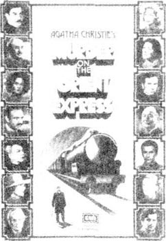
“东方快车！”阿加莎说，“我一直想乘一次那列有名的火车。我要去巴格达，不去西印度群岛了！”
豪夫妇很热心地给阿加莎写下了那些要参观的名胜古迹的名字。“您一定要去乌尔。”豪司令说。
第二天，阿加莎把去西印度群岛的船票换成了乘东方快车去伊斯坦布尔的车票，然后从那里穿越沙漠到达巴格达。
对她而言，这是一次很让人兴奋的旅行，因为这是她首次独自出行。后来这次旅行赋予了她写出她另外一部名作的灵感——《东方快车谋杀案》。
在巴格达逗留期间，她想起了豪司令说过的话：“您一定要去乌尔。”
阿加莎对考古学极其感兴趣，而且当时考古学家伦纳德·伍利和他的妻子正在乌尔工作。
凯瑟琳·伍利非常高兴能见到阿加莎。
“我很喜欢您的书！”她告诉阿加莎。“我刚刚读完《罗杰·阿克罗伊德命案》，写得棒极了！”
阿加莎成了伍利夫妇的贵宾。她喜欢乌尔，也喜欢看考古学家们工作。这种工作缓慢而辛苦，并且他们挖掘时必须非常小心。有时候一连几个小时他们一无所获，有时候他们则可以发现一些旧锅或刀子。而某个考古工作者发现了有几千年历史的东西的时候，总是很让人兴奋的时刻。
“以后你一定要再来。”凯瑟琳·伍利说。
阿加莎做到了。她于1930年3月出发，也就是伍利夫妇准备回英国前的一个星期。之所以这样安排，为的是阿加莎能够和他们一同途经叙利亚和希腊返回。
和伍利夫妇一起工作的有一个名叫马克斯·马洛温的年轻考古学家。他25岁，是个性格温和的年轻人。
“我已经告诉马克斯让他带你去奈寨和克尔巴拉，”凯瑟琳·伍利对阿加莎说，“奈寨是亡灵的圣地，而在克尔巴拉有一个很漂亮的清真寺。他会在我们动身去巴格达的时候带你去那儿。路上你还可以顺便去尼普尔。”
“哦，可是难道马克斯不想和你们一起去巴格达吗？”阿加莎问道，“回英国之前他肯定要去那儿看望朋友。”
“哦，不，”凯瑟琳说，“马克斯会很高兴带你去的。”
那个年轻的考古学家的确很高兴带阿加莎去玩。他立刻喜欢上了她，而且阿加莎也喜欢他。他们又说又笑，在一起的每分每秒都很快乐。
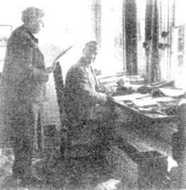
他们与伍利夫妇在巴格达会合，然后四个人一起去了希腊。然而当他们到达在雅典的旅馆时，已经有七封电报等着阿加莎了。电报都是同样的内容——罗莎琳德病了，阿加莎必须尽快赶回去。
“阿加莎，我陪你回去。”马克斯说。
“哦，谢谢你，马克斯，”阿加莎说，“可是你不是计划去——？”
“我已经改变了我的计划，”马克斯平静地说，“阿加莎，我要和你一起回去。”
于是他们一起回了家。赶到家时，发现罗莎琳德已经好多了，那是一个圆满结局。很快，又有了另外一个。
阿加莎比马克斯大14岁，但在回英国的途中马克斯决定问她一个很重要的问题。回到英国后，他便向阿加莎求婚了。
1930年9月11日，他们在苏格兰的爱丁堡结婚了。
* * *
也是在1930年，阿加莎的另一位名探在《牧师家的谋杀案》中首次登场了。她就是简·马普尔小姐——一位住在宁静的英国乡村圣·玛丽米德的小个子老太太。马普尔小姐看上去就像是谁的祖母，一个和蔼可亲、喜欢烹饪和园艺的老太太。可是她有着非常锐利的眼睛和极其灵敏的听觉。她能够看见、听到并且记住一切——姓名、面孔、火车和汽车的时间、衬衣的颜色、关门的声音。她总是能在警方之前找出凶手。
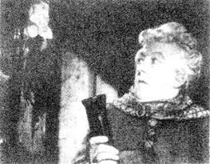
读者们非常喜欢马普尔小姐的故事，很快她便变得和赫尔克里·波洛一样受欢迎了。可她是不是一个真实的人呢？这个人物的灵感又是从哪里得来的呢？
“哪里？我记不得了。”阿加莎总是这么说。
8．Dame Agatha
8
Dame Agatha
For the next twenty-five years, Agatha went with Max on all his archaeological journeys. She loved travelling, and those were the happiest years of her life. It was a good time for writing, too.
'It's nice and quiet,' Agatha always said. 'There's no telephone!'
And visiting these interesting places gave her ideas for some of her best books—Death on the Nile, Appointment with Death, Murder in Mesopotamia, They Came to Baghdad.She was now one of the most popular detective-story writers in the world.
One of the many people who enjoyed her books was Queen Mary, the mother of the King of England. One day, in 1946, Agatha had a letter from the British Broadcasting Corporation in London.
'They want me to write a play for Queen Mary's 80th birthday!' she told Max. 'A play for the radio.'
'Then you must do it,' said Max.
Agatha's play for radio was called Three Blind Mice. Later, she wrote the play again, for a London theatre. This time it was much longer, and she gave it a new name: The Mousetrap.
It is a very famous play. It opened in 1952, and has been in one or other of the London theatres ever since then. In 1997, 45 years later, people were still going to see the play.
Why? It's a very good murder mystery, of course, but there is another story about The Mousetrap, too. Every night, at the end of the play, one of the actors talks to the people in the theatre, and says, 'Please don't tell your friends who did the murder in this play. They must come to the theatre and see the play themselves!'
And everybody keeps the secret of the murderer's name—and so more and more people go to see the play.
* * *
In 1971, Queen Elizabeth made Agatha a Dame of the British Empire—a very high honour for a woman in Britain.
But why was Agatha Christie so famous? Perhaps it is because she was a wonderful story-teller. She planned her murder mysteries very carefully, putting a clue here, a clue there. And they are clever clues, so it is not easy to guess the name of the murderer. Who did it? We want to know, and by the end of the book, everything falls tidily into place—and we have the answer. And of course the stories are not really about murder and death—they are puzzles, with comfortable endings, because it is pleasing to read that the detective always catches the criminal. For an hour or two, we can escape from real life, which is often neither tidy nor comfortable.
Agatha Christie died on the 12th of January, 1976. During her life, she wrote sixty-seven detective novels, ten books of short stories, thirteen plays, six novels that were not about crime (using the name 'Mary Westmacott'), and two books about her life. Many films were made from her books; the most famous one is Murder on the Orient Express, made in 1974.
Today, millions of her books, in more than forty different languages, are still sold in every country of the world, from China to Nicaragua. Agatha Christie was, perhaps, the greatest detective-story writer of all time—a woman of mystery, both in books and in life.
broadcasting n. sending out programmes on radio or television. （无线电或电视节目）广播。
corporation n. business company. 公司。
mousetrap n. trap for catching mice. 捕鼠器。
honour n. reputation for greatness, good behaviour, truth fulness, etc. 荣誉；名誉；信誉。
tidily adv. arranged neatly and in order. 安排或排列整齐地。
fall into place (of a set of facts or series of events) begin to make sense in relationship to each other. （指一系列事实或事件）开始有头绪。
puzzle n. question that is difficult to understand or answer; mystery. 难题；谜一般的事物。
criminal n. person who commits a crime or crimes. 犯人；罪犯。
阿加莎女爵士
8．阿加莎女爵士
后来的25年里，马克斯每次的考古之旅都有阿加莎陪伴。她喜欢旅行，那些年是她一生中最快乐的时光，同样也是写作的一段黄金时间。
“多么美好宁静啊，”阿加莎总是这样说，“没有电话！”
游览那些名胜古迹赋予她的灵感促成了她最优秀的几本书的创作——《尼罗河上的惨案》、《死亡约会》、《美索不达米亚谋杀案》和《他们来到巴格达》。她成为世界上最受欢迎的侦探小说家之一。
她众多的忠实读者之一便是英国国王的母亲，玛丽王后。1946年的一天，阿加莎接到了伦敦英国广播公司的一封信。
“他们想让我为玛丽王后的80岁生日写一个剧本！”她告诉马克斯，“一个广播剧。”
“那你必须写了。”马克斯说。
阿加莎的广播剧名叫《三只盲鼠》。后来她又为伦敦一家剧院改写了这个剧本，把它的时间加长了很多，并且取了一个新名字：《老鼠夹》。
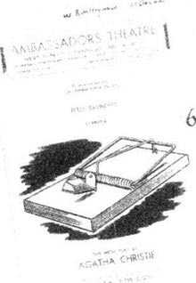
这个剧本非常有名。它于1952年开演，从那以后总有一家或几家伦敦剧院里在上演这部剧。1997年，在它首演45年后，人们依然去看这部剧。
为什么呢？当然这是一个写得很好的神秘谋杀案，可是关于《老鼠夹》这部剧还有另外一个故事。每晚，在剧末都会有一个演员对剧场里的观众说：“请不要告诉您的朋友们剧中的凶手是谁。他们必须亲自来剧院观看！”
大家都保守住了凶手是谁的秘密，于是就有越来越多的人来观看这部剧了。
* * *
1971年，伊丽莎白女王册封阿加莎为英国女爵士——一个对英国女人来说非常高的荣誉。
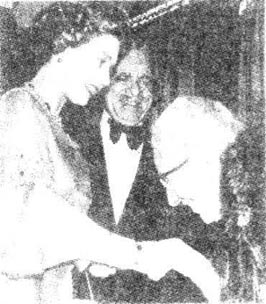
但是阿加莎·克里斯蒂的名气为什么这么大呢？可能因为她是一名很棒的小说家。她总是这一条线索、那一条线索地非常巧妙地布置这些神秘的谋杀案，并且这些线索都极其隐秘，所以不易猜出凶手是谁。我们想知道是谁干的，却一直要到书末，一切都水落石出的时候，才能找到答案。当然这些故事不只是关于谋杀和死亡——它们是一些谜团，有着令人满意的结局，因为人们总是很高兴看到侦探能抓获罪犯。就在那么一两个小时里，我们可以暂时逃离既不井井有条又不让人满意的现实生活。
阿加莎·克里斯蒂于1976年1月12日去世。她一生中写过67部侦探小说，10本短篇小说集，13个剧本，6部非犯罪题材的小说（以“玛丽·韦斯特马科特”这个名字出版的），还有两部自传。她的书被拍成多部电影，最著名的是1974年拍摄的《东方快车谋杀案》。
如今，她的书被译成40多种不同的文字，从中国到尼加拉瓜，在世界上每一个国家都可以买得到，销售量达千百万册。阿加莎·克里斯蒂或许将永远是一位侦探小说巨匠——一个在书中、生活中同样神秘的女人。
ACTIVITIES: Before Reading
ACTIVITIES
Before Reading
1．Read the introduction on the book. How much do you know now about Agatha Christie and her books?
Tick one box for each sentence.
1) Agatha Christie's books are love stories.
YES □／NO □
2) Her books are read all over the world.
YES □／NO □
3) One of her famous detectives is a woman.
YES □／NO □
4) Hercule Poirot is a Frenchman.
YES □／NO □
5) Agatha Christie had four husbands.
YES □／NO □
6) There are many films of her stories.
YES □／NO □
2．What is the mystery in Agatha Christie's life? Can you guess? Choose one of these ideas.
1) For years she lives alone in a big house and never sees or talks to anybody.
2) She helps to find a real murderer, but nobody knows how she did it.
3) She disappears for some weeks and nobody ever finds out what happened to her.
4) Somebody tries to murder her, but she never tells anybody about it.
ACTIVITIES: While Reading
ACTIVITIES
While Reading
1．Read Chapters 1 and 2, and answer these questions.
1) Why did Agatha's mother tell Agatha to write a story?
2) What happened to Agatha's first story?
3) Why did Agatha go to London when she was eighteen?
4) What did Agatha do in Cairo?
5) How did Agatha get to know Reggie Lucy?
6) Why did Agatha and Reggie have to wait before they got married?
2．Before you read Chapter 3, can you guess the answer to this question?
When Reggie comes home again, will Agatha marry him?
3．Read Chapters 3 and 4. Who said, thought, or wrote these words? Who or what were the words about?
1) 'No, I don't think so. Not a hotel.'
2) 'I've already told Reggie that I'll marry him.'
3) 'Don't worry about it. I understand.'
4) 'There's a war on. Who knows what will happen? Be happy while you can.'
5) 'You couldn't do it. They're very difficult to do.'
6) 'He'll be a very clever, very tidy little man.'
7) 'Go away somewhere nice and quiet, and take it with you.'
8) 'But you will need to change the last chapter.'
4．Read Chapters 5 and 6. Choose the best question-word for these questions, and then answer them.
What/Why
1) ...did Agatha begin writing another book?
2) ...was the detective Hercule Poirot like?
3) ...did people talk about The Murder of Roger Ackroyd?
4) ...did people think that Agatha disappeared?
5) ...happened at eleven o'clock on 3rd December,1926?
6) ...did George Best find in a car at Newlands Corner?
7) ...were people at the Hydro Hotel in Harrogate so interested in Mrs Teresa Neele?
8) ...really happened on the night that Agatha Christie left Styles?
5．Before you read Chapters 7 and 8, can you guess which of these sentences are true?
1) Agatha and Archie decide to stay married.
2) Archie is murdered.
3) Agatha meets and marries another man.
4) Agatha spends a lot of her time travelling.
5) Agatha is famous, but unhappy, for the rest of her life.
ACTIVITIES: After Reading
ACTIVITIES
After Reading
1．Here is a passage about Agatha Christie, but it is full of mistakes. Can you find and correct them?
Agatha Christie was a famous writer of ghost stories. She was born in 1890, was married three times, and had two sons. She met her third husband, Max Mallowan, in Scotland. He was a well-known photographer, who spent a lot of time travelling, but Agatha always stayed at home.
Agatha Christie wrote nearly two hundred books. The famous detectives in her plays are called Mr Hercule Marple and Miss Jane Poirot. Two of her best-known titles are the play The Murder of Archie Ackroyd, and the novel The Mousetrap, which you can still hear on the radio today.
2．You are a reporter in 1926, and Agatha Christie has agreed to answer five questions about her disappearance. Which questions will you ask? Choose five from the list below.
1) Why did you go away without telling anybody?
2) Were you feeling ill before you went away?
3) Did you know who you were?
4) Why did you leave your car at Newlands Corner?
5) How did you get to Harrogate?
6) Why did you choose the Hydro Hotel?
7) Why did you call yourself 'Mrs Teresa Neele'?
8) Are you in love with another man, and did you go away to meet him secretly?
9) The police thought you were dead, and your husband was the murderer. What do you say about that?
10) Your name is in every newspaper, and now more people will buy your books. Is that why you disappeared?
How did Agatha answer your five questions? Think of possible answers and write a report for the newspaper.
3．The police ask Archie a lot of questions after Agatha disappears. Complete their conversation (use as many words as you like).
POLICE:
Were ______?
ARCHIE:
NO, I wasn't. I was away, staying with friends.
POLICE:
And why ______?
ARCHIE:
She didn't want to. She didn't know these friends.
POLICE:
So did ______?
ARCHIE:
She didn't say she had any plans.
POLICE:
Mr Christie, where do you think ______?
ARCHIE:
I don't know. I just don't know.
POLICE:
Mm. Are ______?
ARCHIE:
Yes. Well, er...we're as happy as most husbands and wives.
POLICE:
I see. Tell me, Mr Christie, do ______?
ARCHIE:
Yes, of course I want her to come home!
4．Find the eighteen words hidden in this word search, and draw lines through them. Words go from left to right, and from top to bottom. All the words are four letters or more, and many letters are used more than once.
Now write down all the letters that don't have lines through them (begin at the top and go across each line to the end). You will have twenty-four letters, which will make five words.
1) What are the five words?
2) What two things are these five words used for?
3) How is a short fat Belgian with a moustache connected with these words?
4) How did the last three of the five words begin to change Agatha Christie's life?
5．Here are titles of five Agatha Christie books. Can you match each title with one of the story descriptions below?
The Moving Finger/Death on the Nile/Murder is Easy/At Bertram's Hotel/Murder on the Orient Express
1) There have been several murders in Miss Pinkerton's village. Luke tells Miss Pinkerton that it's hard to kill a lot of people. 'The police always find out,' he says. 'Oh no,' says Miss Pinkerton, 'it's not difficult at all...'
2) A famous train is stopped in the snow somewhere in Europe, and a man is found murdered in his bed. One of the passengers is the murderer—but which one?
3) Hercule Poirot is on holiday in Egypt, on a boat on one of the world's most famous rivers. But one of the other passengers, Linnet Ridgeway, tells him, 'I'm afraid...'
4) Someone is writing unkind letters to people living in the little town of Lymstock. Who is it? But the letters are only the beginning of the mystery. Soon someone dies.
5) A train is robbed... someone disappears... someone is shot. What is going on at Miss Marple's favourite hotel?
6．What do you think about detective stories, in books or in films? Complete these sentences with your own ideas.
1) I enjoy detective stories because ______.
2) I prefer detective stories which ______.
3) I like detectives who ______.
封底
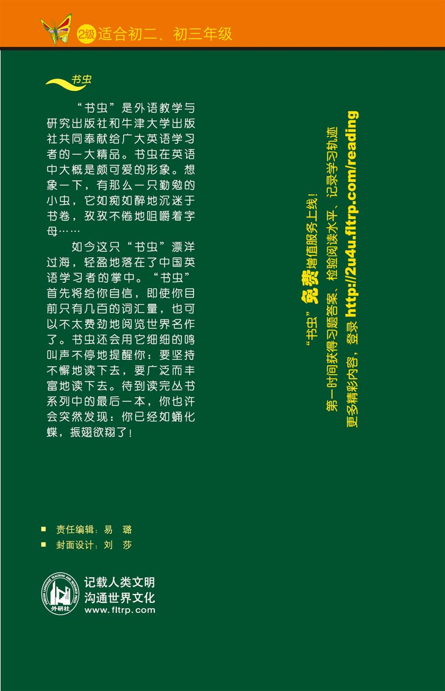